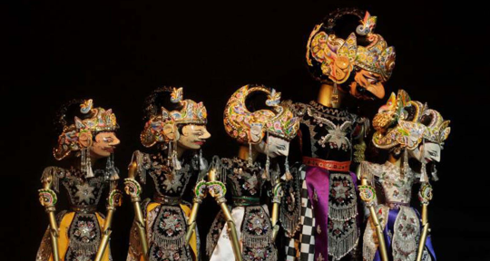

"Saat-saat yang kami habiskan bersamamu selalu penuh dengan sukacita dan kebahagiaan. Mengetahui
bahwa kamu akan bersama kami, membuat kami tersenyum. Selamat datang di rumah kami!"
Kesenian Sunda

Wayang Golek merupakan salah satu dari ragam kesenian wayang, yang berasal dari masyarakat Sunda
di
Jawa Barat & Banten. Pertunjukan seni wayang golek merupakan seni pertunjukan teater rakyat yang
banyak dipagelarkan. Wikipedia
Jaipongan adalah sebuah jenis tari pergaulan tradisional masyarakat Sunda yang berasal dari
wilayah Karawang dan sangat populer di Indonesia. Wikipedia